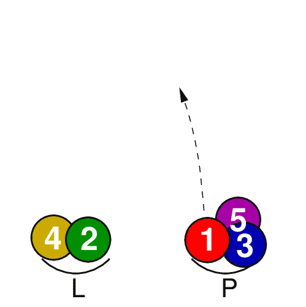
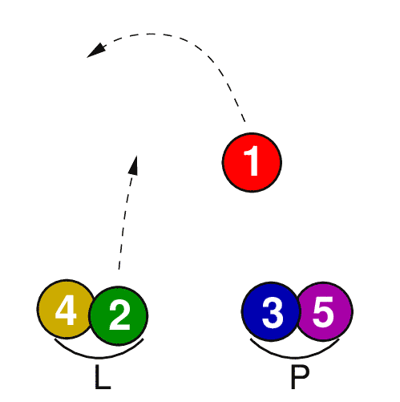
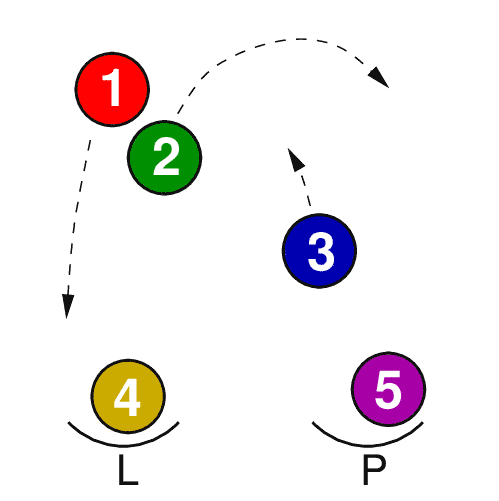
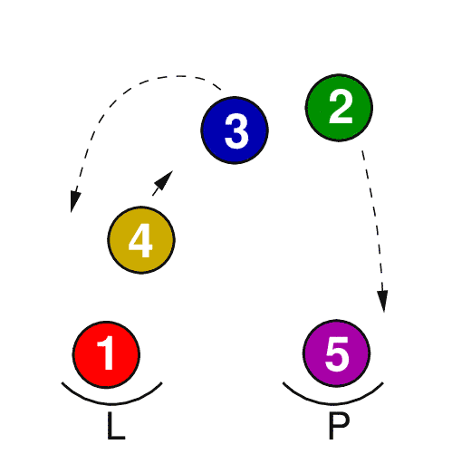
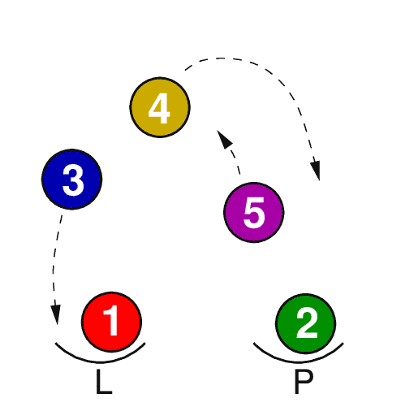

Jste zde: Žonglování » Míčky » 5 míčků » Kaskáda
Kaskáda
Kaskáda s pěti míčky je obtížný trik. Než se do něj pustíš, poctivě trénuj triky se třemi a čtyřmi míčky.

Kaskádu začni rukou, ve které držíš tři míčky. Podle obrázku tedy pravou rukou vyhoď první míček.

Těsně po prvním míčku vyhoď druhý míček z levé ruky.

První vyhozený míček už klesá a bude zachycen levou rukou. Druhý míček opisuje vrchol oblouku. A mezitím už pravačkou vyhazuješ třetí míček, letí po stejné dráze jako první míček. Míčky jsou ve stejné poloze jako když provedeš blesk a máš v každé ruce ještě jeden míček navíc.

Druhý vyhozený míček klesá a bude chycen do pravé ruky. Třetí míček opisuje vrchol oblouku, letí po stejné dráze jako před chvílí první míček. A mezitím už levačkou vyhazuješ čtvrtý míček, letí po stejné dráze jako druhý míček.

Třetí vyhozený míček už klesá a bude zachycen levou rukou. Čtvrtý míček opisuje vrchol oblouku. A mezitím už pravačkou vyhazuješ pátý míček, letí po stejné dráze jako třetí míček. Pohyb míčků zachycený na tomto obrázku je stejný jako na obrázku o dva kroky dříve.
Dál vyhazuj a zachycuj míčky podle posledních dvou obrázků.
Sepsal jsem několik rad pro žonglování s pěti míčky. Snad ti trochu pomohou. Žádný zázračný tip však není. Naučit se žonglovat s pěti míčky trvá dlouho.